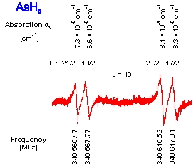

Example of recording demonstrating RAD spectrometer sensitivity

“Forbidden” transitions of AsH3 molecule recorded by RAD
spectrometer.
The spectrometer sensitivity can be calculated using the line maximum absorption
coefficients (shown above) and the recording signal to noise ratio as:
Investigation of the 22-GHz atmospheric diagnostic water vapor line using RAD spectrometer.
Three hundred experimental spectra (lock-in time constant is 0.5 s) of the mixture of water vapor
with argon are shown by grey curves. Averaged spectrum is shown by solid black curve.
Pure rotational transition 532-533 of HDO molecule in natural abundance is seen in the upper
line wing near 22.307 GHz (shown in the inset). Evaluated sensitivity of the spectrometer
is 2×10-10 cm-1 [Ref. 1 (2018)].